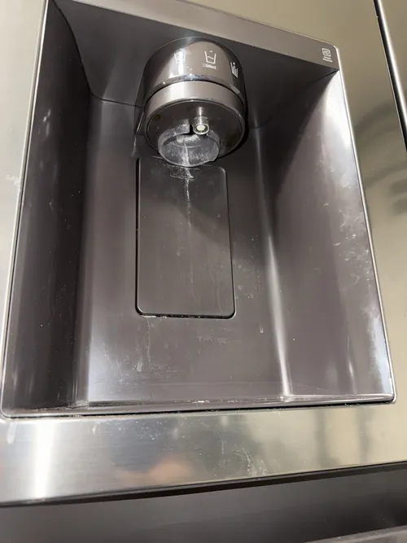

LG Refrigerator Repair: Common Warning Signs You Should Never Ignore
Modern LG refrigerators are designed to provide years of reliable cooling performance, advanced food preservation, and energy efficient operation. However, like any complex appliance, even a well maintained refrigerator can develop problems over time. The good news is that most refrigerator failures do not happen without warning. In many cases, homeowners notice subtle changes in performance weeks or even months before a major breakdown occurs. Recognizing these warning signs early can help reduce repair costs, prevent food spoilage, and avoid unexpected appliance failure.
One of the most common signs that professional LG refrigerator repair may be needed is inconsistent cooling. Many homeowners first notice that food does not stay as cold as usual or that temperatures fluctuate throughout the refrigerator compartment. Milk may spoil faster, vegetables may lose freshness, or beverages may not feel properly chilled. These symptoms can be caused by airflow restrictions, evaporator fan problems, sensor failures, electronic control issues, or developing compressor problems. Early diagnosis can help identify the source of the problem before cooling performance continues to decline.
Unusual noises should never be ignored. While refrigerators naturally produce some operating sounds, sudden clicking, buzzing, humming, rattling, or grinding noises often indicate a developing issue. Compressor components, fan motors, relays, and airflow systems can all create abnormal sounds when they begin to fail. Many homeowners become accustomed to these noises and postpone service until cooling performance is affected. Professional LG refrigerator repair can often identify the source of unusual sounds before additional components become damaged.

Water leaks are another common warning sign. Puddles beneath the refrigerator, moisture inside compartments, or water around the dispenser area may indicate clogged drain systems, damaged water lines, faulty valves, or ice maker related problems. Even small leaks can eventually damage flooring, cabinetry, and nearby surfaces. Prompt LG refrigerator repair helps prevent additional property damage while restoring normal refrigerator operation.
Ice maker performance often provides valuable clues about refrigerator health. Slow ice production, small ice cubes, leaking dispensers, frozen water lines, or complete ice maker failure may indicate water supply issues, sensor problems, control board malfunctions, or cooling system deficiencies. Because modern LG refrigerators use multiple interconnected systems to support ice production, accurate diagnostics are important when troubleshooting these symptoms.
Another warning sign many homeowners overlook is excessive frost buildup. Frost accumulation inside the freezer compartment may indicate airflow restrictions, defrost system failures, damaged door gaskets, or sensor related problems. Excessive frost can reduce cooling efficiency, increase energy consumption, and place additional strain on refrigerator components. Professional LG refrigerator repair helps identify the root cause and restore proper airflow and temperature control.
Longer running cycles can also indicate developing refrigerator problems. Modern LG refrigerators are designed to operate efficiently, but a refrigerator that seems to run continuously may be compensating for cooling deficiencies. Dirty condenser coils, failing fans, damaged door seals, refrigerant issues, or compressor problems can all cause the appliance to work harder than normal.
Prolonged operation under these conditions may increase wear on critical cooling components. Electronic error codes should always be taken seriously. Many LG refrigerators include built in diagnostic systems that monitor sensors, fans, communication boards, and cooling functions. Error messages displayed on the control panel often provide early warning of component failures before complete system shutdown occurs. Ignoring these alerts can allow minor problems to develop into larger and more expensive repairs.
Temperature fluctuations inside the refrigerator are another important sign that service may be needed. Food freezing unexpectedly in the fresh food compartment, warm spots inside the refrigerator, or inconsistent freezer temperatures can all indicate problems with sensors, airflow systems, control boards, or cooling components. Accurate LG refrigerator repair diagnostics help determine the exact cause and prevent recurring temperature related issues.
Perhaps the most important reason to address warning signs early is that refrigerator problems rarely improve on their own. Small component failures often create additional stress on related systems, increasing the likelihood of larger repairs in the future. Early diagnostics not only improve the chances of a successful repair but may also help extend the overall lifespan of the appliance.
Professional LG refrigerator repair focuses on identifying the root cause of performance issues while restoring reliable cooling, energy efficiency, and long term appliance reliability. Whether your refrigerator is making unusual noises, leaking water, struggling to maintain temperature, or displaying error codes, responding quickly to early warning signs can help protect both your appliance and your investment.